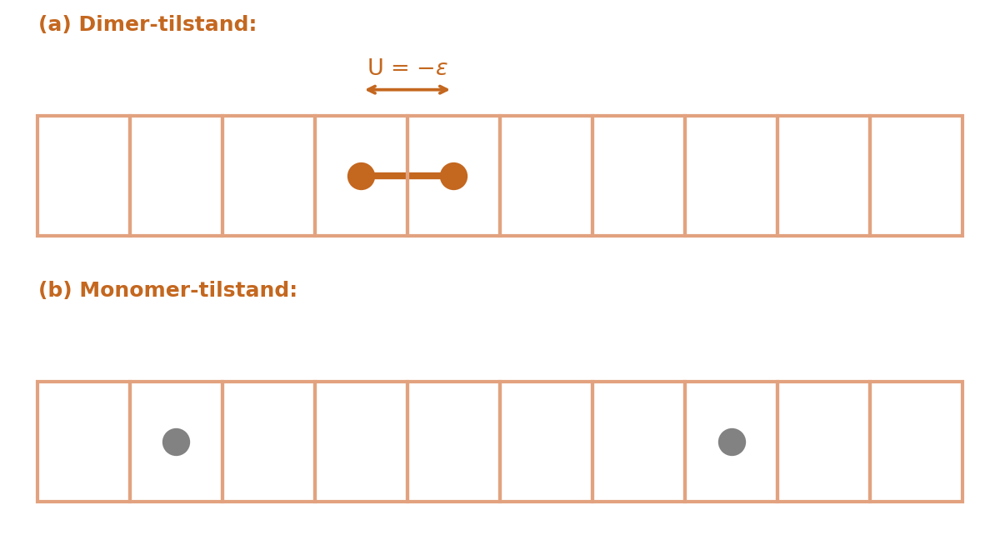
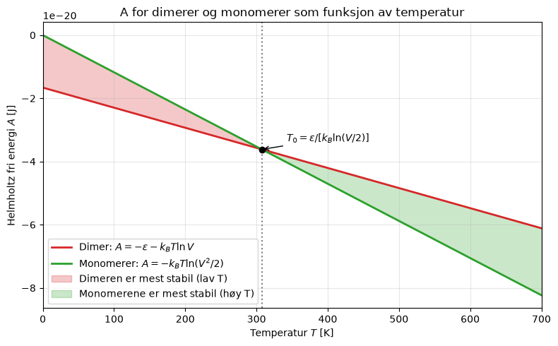
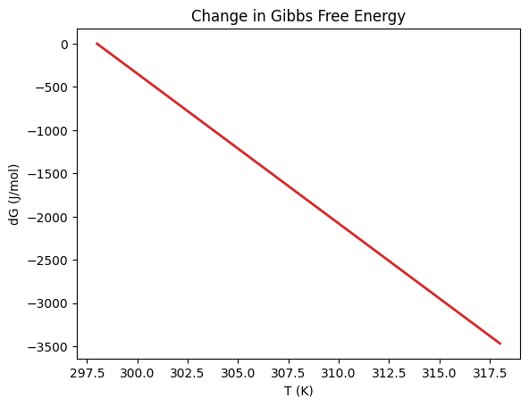
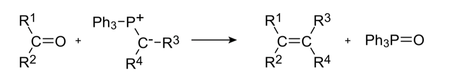
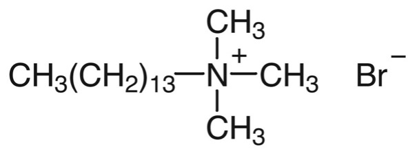

Uke 6 – Fri energi#
Diskusjonsoppgaver#
Oppgave 1: Hva er fri energi?#
a) Hva er den fundamentale termodynamiske relasjonen for den indre energien U? Hvilke naturlige variable har U?
Svar Endringen i indre energi kan uttrykkes ved endringer i entropi, volum og sammensetning. Noe som gir oss den fundamentale ligningen for U:
\(U\) er altså en funksjon av de naturlige variablene: \(S\) entropi, \(V\) volum og \(n_i\) antall partikler av typen (tilstanden) i: \(U = U(S, V, \{n_i\})\). Dette gir oss også forholdene:
Vi kan tolke hver variabel på høyre side som en energitilførsel (som også kan være negativ): varme (\(T\,dS\)), volumarbeid (\(-P\,dV\)) eller stofftilførsel (\(\mu_i\,dn_i\)).
b) Hvordan definerer vi henholdsvis Helmholtz (A) og Gibbs (G) fri energi?
Svar Begge defineres ut i fra \(U\):
For Helmholtz fri energi er det vanlig å bruke både \(A\) og \(F\).
c) Bruk definisjonene i b og a til å komme fram til de fundamentale ligningene for Helmholtz og Gibbs fri energi.
Svar Differensier definisjonene fra b og sett inn uttrykket for \(dU\) fra a.
Helmholtz fri energi:
\(A\) har de naturlige variablene \((T, V, \{n_i\})\), med stigningstall
Gibbs fri energi: den fundamentale relasjonen for entalpi følger ved å differensiere \(H = U + PV\):
Deretter:
\(G\) har de naturlige variablene \((T, P, \{n_i\})\), med stigningstall
Ved å definere fri energi (A eller G) bytter vi naturlig variabel fra \(S\) til \(T\) og fra \(V\) til \(P\). Dette er størrelser vi (lettere) kan styre og måle i et eksperiment (termostatbad, atmosfære), i stedet for entropien. Legg merke til at for konstant \(T,P\) er kjemisk potensial nettopp den deriverte av \(G\) med hensyn på stoffmengde, \(\mu_i = (\partial G/\partial n_i)\) — derfor er \(G\) det naturlige potensialet for reaksjoner og blandinger.
d) Diskuter hva forskjellen er på indre energi og fri energi, og hvorfor dette kan være nyttig?
Svar
U er systemets totale indre, mikroskopiske energi. Den omfatter blant annet molekylenes kinetiske energi, energi i bindinger og intermolekylære vekselvirkninger.
Fri energi er et mål på hvor mye arbeid systemet maksimalt kan levere når det bringes reversibelt til likevekt under bestemte ytre betingelser, og minimering av den frie energien gir likevekt.
Generelt så har vi at en prosess er spontan når: $\( \Delta A < 0\)$
for konstant volum og temperatur, eller for konstant trykk og temperatur:
og ved likevekt har vi at:
eller
Samtidig har vi at endring i Helmholtz fri energi gir det maksimalt mulige arbeid systemet kan utøve på omgivelsene
mens endring i Gibbs fri energi
gir maksimalt ikke-ekspansjonsarbeid (for eksempel elektrisk eller biokjemisk arbeid).
e) Hvorfor gir Gibbs maksimalt mulig ikke-ekspansjonsarbeid mens Helmholtz gir maksimalt mulig arbeid totalt?
Svar Skillet er volumarbeidet: Helmholtz teller med alt arbeid, Gibbs teller bare arbeidet «utover» volumarbeidet.
Helmholtz. Ved konstant \(T\) (\(dT = 0\)) og et reversibelt forløp er \(dU = T\,dS + \delta w_{\mathrm{rev}}\), og fundamentalligningen fra c gir
Altså fanger \(\Delta A\) totalt reversibelt arbeid — volumarbeidet (\(-P\,dV\)) og alle andre arbeidsformer inkludert.
Gibbs. Ved konstant \(P\) splittes det reversible arbeidet opp i volumarbeid og resten: \(\delta w_{\mathrm{rev}} = -P\,dV + \delta w_{\mathrm{ne}}\), der \(\delta w_{\mathrm{ne}}\) er ikke-ekspansjonsarbeidet (for eksempel elektrisk arbeid). Med \(dT = 0\) og \(dP = 0\) gir fundamentalligningen
De to \(P\,dV\)-leddene opphever hverandre. Fysisk: ved konstant trykk «spenderes» volumarbeidet på å skape plass i atmosfæren, og kan ikke høstes som nyttig arbeid; bare resten (\(\delta w_{\mathrm{ne}}\), som elektrisk arbeid i en elektrokjemisk celle) er faktisk tilgjengelig. Derfor: \(-\Delta A\) er maksimalt totalt arbeid, og \(-\Delta G\) er maksimalt ikke-ekspansjonsarbeid.
Oppgave 2: Illustrasjon av Helmholtz fri energi, dimerer eller monomerer#
Dette eksempelet viser hvordan vi kan bruke minimering av fri energi til å forutsi likevekt. For å gjøre dette skal vi se på en enkel mikroskopisk modell som kombinerer energi- og entropibidrag: et system med to partikler som enten er assosiert (en dimer) eller dissosiert (to frie monomerer). Vi kan tenke på dette som at to atomer kan danne en binding eller være dissosiert som to enkeltatomer.
Gitt: Vi har \(N=2\) identiske partikler i en testrør modellert som et endimensjonalt gitter med \(V\) plasser i rekkefølge, systemet er i et termisk likevekt med et varmebad med temperatur \(T\):
Dimer-tilstand: Når de to partiklene sitter på naboplasser, kan de danne en binding med energi \(\varepsilon>0\). I dette forenklede systemet med to partikler er dette eneste bidraget til den indre energien \(U=-\varepsilon\)
Monomer-tilstand: Når de to partiklene ikke er ved siden av hverandre kan de ikke danne noe binding og dermed er den indre energien null, \(U=0\). De plasseres på to forskjellige plasser i gitteret, uten å være naboer.

Vi ønsker å finne under hvilke betingelser systemet danner en dimer, og når det forblir som 2 separate partikler.
a) Diskuter følgende:
For dimeren, hvorfor er det det et minustegn i \(U=-\varepsilon\)?
Hvilke termodynamiske størrelser holder vi konstant her, og hvilket uttrykk for den frie energien må vi da bruke?
Hva forventer vi skjer med den frie energien ved likevekt?
Svar I et termisk bad er \(T\) konstant; et stivt testrør gir konstant volum \(V\); og \(N=2\) er gitt og endres ikke. Med \((T,V,N)\) konstant er det Helmholtz fri energi
som er på minimum ved likevekt. Fysisk betydning: \(A\) balanserer interaksjonsenergien \(U\) mot entropibidraget \(-TS\), og temperaturen \(T\) avgjør vektingen: ved høy \(T\) dominerer entropileddet, ved lav \(T\) dominerer energileddet.
b) Regn ut på hvor mange forskjellige plasser dimeren kan være i, anta at antall gitterplasser \(V\) er veldig stort og \(V\gg 1\).
Svar Dimeren trenger to naboplasser. Setter vi den ene partikkelen på plass \(1, 2, \dots, V-1\), kan den andre ligge rett ved siden av; fra plass \(V\) ville den andre partikkelen falle utenfor gitteret. Antall dimerposisjoner er altså
c) Bruk dette til å finne et uttrykk for entropien og Helmholtz fri energi for dimer-tilstanden.
Svar Dimeren kan ligge med sin første partikkel på plass \(1,2,\dots,V-1\) (fra plass \(V\) ville den andre partikkelen falle utenfor gitteret). Merk at vi i det følgende bruker approksimasjonen \(V-1\approx V\) (for et stort gitter). Med \(S=k_B\ln W\):
c) Vis først at totalt antall mulige måter å plassere 2 partikler i \(V\) bokser er gitt ved:
Bruk så dette og svaret i oppgave b til å finne antall måter vi kan plassere 2 partikler i \(V\) bokser uten at de er ved siden av hverandre, altså i monomertilstand.
Svar
Totalt antall plasseringer: Plasserer vi partiklene én etter én, kan den første stå på \(V\) plasser, og den andre på \(V-1\) gjenstående plasser (partiklene kan ikke okkupere samme plass). Dette gir \(V\cdot (V-1)\) ordnet plasseringer. Men partiklene er identiske: bytter vi dem, har vi samme konfigurasjon; hver uordnet plassering er derfor telt to ganger. Dermed:
(samme resultat som binomialkoeffisienten \(\binom{V}{2}\)).
Monomertilstand: Vi trekker fra plasseringene der partiklene er naboer, altså dimerposisjonene fra oppgave b: \(V-1\) stk.
Trekkes fra på fellesnevner:
For \(V \gg 1\) er \((V-1)\approx V\) og \((V-2)\approx V\), så
Monomertilstanden gir altså vesentlig flere mikrotilstander enn dimeren (\(V^2/2\) mot bare \(\sim V\)).
d) Finn et uttrykk for entropien og Helmholtz fri energi for monomer-tilstanden.
Svar Med \(U_{\mathrm{monomer}}=0\) og \(W_{\mathrm{monomer}}\approx \frac{V^2}{2}\):
Stigningstallet \(dA/dT=-k_B\ln(V^2/2)\) er brattere enn dimerens (\(-k_B\ln V\)), siden \(V^2/2\gg V\) for \(V>2\): monomertilstanden har større entropi (flere mikrotilstander).
e) Finn krysstemperaturen \(T_0\) der de to tilstandene er like stabile (lik fri energi). Hvorfor er dimeren den mest stabile tilstanden ved \(T<T_0\), og monomeren ved \(T>T_0\)? Hvordan avhenger \(T_0\) av \(\varepsilon\) og \(V\)?
Svar Sett \(A_{\mathrm{dimer}}=A_{\mathrm{monomer}}\) og løs trinnvist for \(T_0\):
Sett likt:
Del med \(-k_BT_0\) og flytt logaritmene til høyre side:
Vis at dette blir \(\ln(V/2)\) (her brukes \(\ln(V^2/2)=2\ln V-\ln 2\)):
Løs deretter for \(T_0\):
Fysisk tolkning:
Jo sterkere tiltrekning (større \(\varepsilon\)), jo høyere \(T_0\) – det kreves mer termisk energi for å rive dimeren fra hverandre.
Jo større gitter \(V\), jo lavere \(T_0\) – flere ledige plasser gjør den dissosierte tilstanden entropisk mer fordelaktig.
For \(T<T_0\) er \(A_{\mathrm{dimer}}<A_{\mathrm{monomer}}\): dimeren er stabilest (energien dominerer). For \(T>T_0\) er \(A_{\mathrm{monomer}}<A_{\mathrm{dimer}}\): monomeren dominerer (entropien dominerer). Se figuren under.
f) Under finner dere pythonkodeutsnitt som vil plotte den frie energien for monomeren og den frie energien for dimeren, Men dere må først fylle ut utrykkene for hver av de to. “A_dimer” og “A_momonmer”. Figuren over viser \(A(T)\) for \(V=100\) og \(\varepsilon=1.6605\cdot10^{-20}\ \mathrm{J}\). Forklar med utgangspunkt i figuren hvorfor dimeren dominerer ved lav temperatur og monomerene ved høy temperatur, og hva stigningstallene representerer fysisk.
import numpy as np
import matplotlib.pyplot as plt
# Modellverdier: energi per partikkel.
# eps i joule (10 kJ/mol / N_A), k_B i J/K -> alt i reelle enheter.
V = 100.0 # antall gitterplasser
eps = 1.6605e-20 # bindingsenergi per partikkel [J] = 10 kJ/mol
k_B = 1.380649e-23 # Boltzmanns konstant [J K^-1]
T = np.linspace(0, 700, 400)
A_dimer = (-eps - k_B * T * np.log(V)) # i joule
A_monomer = (-k_B * T * np.log(V**2 / 2)) # i joule
T0 = eps / (k_B * np.log(V / 2))
print(f"Krysstemperatur T0 = {T0:.1f} K")
plt.figure(figsize=(8, 5))
plt.plot(T, A_dimer, color="C3", lw=2, label=r"Dimer: $A=-\varepsilon-k_B T\ln V$")
plt.plot(T, A_monomer, color="C2", lw=2, label=r"Monomerer: $A=-k_B T\ln(V^2/2)$")
plt.axvline(T0, color="gray", ls=":", lw=1.5)
A0 = (-eps - k_B * T0 * np.log(V))
plt.plot([T0], [A0], "ko", ms=6, zorder=5)
plt.annotate(r"$T_0=\varepsilon/[k_B\ln(V/2)]$", (T0, A0),
xytext=(T0 + 35, A0 + 0.25e-20),
arrowprops=dict(arrowstyle="->", color="k", lw=1))
# Hvilken tilstand som er stabilest (lavest A)
plt.fill_between(T, A_dimer, A_monomer, where=(A_dimer <= A_monomer),
color="C3", alpha=0.25, label="Dimeren er mest stabil (lav T)")
plt.fill_between(T, A_dimer, A_monomer, where=(A_dimer > A_monomer),
color="C2", alpha=0.25, label="Monomerene er mest stabil (høy T)")
plt.xlabel(r"Temperatur $T$ [K]")
plt.ylabel(r"Helmholtz fri energi $A$ [J]")
plt.title("A for dimerer og monomerer som funksjon av temperatur")
plt.xlim(0, 700)
plt.grid(alpha=0.3)
plt.legend(loc="lower left")
plt.tight_layout()
plt.show()
Krysstemperatur T0 = 307.4 K

Svar Begge kurver synker med \(T\), fordi \(dA/dT=-S<0\). Dermed kan man lese entropiene rett av stigningstallene:
Dimerlinjen er «flatere» (\(|dA/dT|=k_B\ln V\), lav entropi, få konfigurasjoner) og starter lavest, på \(A=-\varepsilon\) ved \(T=0\): bindingsenergien «kjøper» stabilitet.
Monomerlinjen starter i \(A=0\) og faller brattere (\(|dA/dT|=k_B\ln(V^2/2)\)): mange flere mikrotilstander (\(W_{\mathrm{monomer}}\gg W_{\mathrm{dimer}}\)) gjør at \(A_{\mathrm{monomer}}\) faller fortere med \(T\).
Konsekvens: til venstre for \(T_0\) ligger dimerlinjen lavest, altså er dimeren den stabile tilstanden (skravert rødt). Til høyre for \(T_0\) ligger monomerlinjen lavest, og systemet dissosierer (skravert grønt). I figuren er alt oppgitt per partikkel (\(\varepsilon\) i joule og \(k_B\) i stedet for \(R\)), slik at
g) Hva ville vi konkludert hvis vi kun hadde maksimert entropien (valgt størst \(W\))?
Svar \(S_{\mathrm{dimer}}=k_B\ln V\) mens \(S_{\mathrm{monomer}}=k_B\ln(V^2/2)\), og siden \(V^2/2>V\) for \(V\gtrsim 2\), ville ren entropimaksimering alltid valgt den dissosierte tilstanden – vi ville konkludert at dimerer aldri dannes, uansett temperatur. Det er feil, fordi vi da overser interaksjonsenergien \(U=-\varepsilon\). Nøkkelen til \(A=U-TS\) er at begge bidrag teller, og at \(T\) bestemmer vektingen: kalde systemer blir styrt av lav energi, varme systemer av mange mikrotilstander.
\(^*\) Denne oppgaven bygger på eksempel 8.1 i Dill, K. A., Bromberg, S., & Stigter, D. (2010). Molecular Driving Forces. Garland Science. https://doi.org/10.4324/9780203809075
Regneoppgaver#
Oppgave 1#
a) Bruk fundamentallikningene for indre energi og entropi til å utlede fundamentallikningen for Gibbs frie energi.
Svar
Gitt at systemet vårt er lukket (konstant stoffmengde) har vi at \(dU = q+ w \), som ved bruk av \(dS = \frac{q_{rev}}{T}\) og \(w =-pdV\) gir oss fundamentallikningen \(dU =TdS-pdV\).
For entalpien (\(H=U+pV\)) gjelder \(dH= dU + pdV +Vdp = TdS - pdV+pdV +Vdp = TdS +Vdp \).
Gibbs frie energi er definert som
Ved å differensiere får vi
b) Bruk Clausius ulikhet til å vise \(\Delta G <0\) for spontane prosesser (ved konstant trykk og temperatur).
Svar
Clausius’ ulikhet er \(dS \ge \frac{dq}{T}\), og for en prosess ved konstant trykk har vi at \(q_p = \Delta H \). Deremd får vi
og dermed får vi at
for en spontan prosess.
c) Hva blir endringen i Gibbs frie energi når temperaturen holdes konstant, men trykket endres:
Svar
Generelt har vi fundamentallikningen: \(dG = Vdp-SdT\). Når temperaturen holdes konstant får vi \(dG = Vdp\).
For kondenserte faser kan vi anta at volumet er tilnærmet konstant, og vi får da
For ideelle gasser gjelder gasslikningen \(V = \frac{nRT}{p}\). Setter dette inn i fundamentallikningen og får
Oppgave 2#
Beregn standard molar Gibbs energi for reaksjonen \(CO(g) + CH_3OH(l) \rightarrow CH_3COOH(l)\) ved \(298\) K, ut fra standard molare dannelsesentropier og –entalpier gitt fra tabellen i Atkins.
Svar
Oppgave 3#
Standard molar entropi for benzen er 173,3 J K-1 mol-1. Lag en funksjon som beregner endringen i standard molar Gibbs energi når benzen varmes opp fra \(25^\circ C\) til en variabel sluttemperatur. Plott \(\Delta G\) for oppvarminger i området \(25^\circ C\) til \(45^\circ C\).
Svar
Endringen i molar Gibbs energi er gitt ved \(dG_m = V_mdp - S_mdT\)
Benzen endrer ikke fase i det gitte intervallet, og dermed er \(V_m\) konstant, og trykket vil være konstant (\(dp=0\)). For dette relativt smale temperatur-intervallet akan vi anta at den molare entropien er tilnærmet konstant. Vi får dermed at
import numpy as np
import matplotlib.pyplot as plt
def dG(T_slutt, T_start=298):
Sm = 173.3 #J/Kmol
return -Sm*(T_slutt - T_start)
T_start = 298
T_slutt = np.linspace(T_start,318,20)
plt.plot(T_slutt, dG(T_slutt), color="C3", lw=2)
plt.xlabel("T (K)")
plt.ylabel("dG (J/mol)")
plt.title("Change in Gibbs Free Energy")
plt.show()

Oppgave 4#
Når en jernbit kommer i kontakt med vann skjer følgende reaksjon:
Standard cellepotensiale for reaksjonen er \(E^{\circ} (V) = 0.45\). Fra cellepotensialet er det mulig å finne det elektriske arbeidet reaksjonen kan utføre ved \(w_{el} = nFE^\circ _{cell}\) hvor F er Farraday konstanten (\(F = 96.485 \frac{\text{kJ}}{\text{V mol}}\)) og n er antall elektroner som overføres under reaksjonen. Anta at reaksjonen skjer ved standard betingelser.
a) Beregn det maksimale elektriske arbeidet som utføres av reaksjonen.
Svar
Vi finner det maksimale elektriske arbeidet ved å bruke formelen som er gitt i oppgaveteksten. For hvert mol jern som reagerer overføres det to mol elektroner, altså \(n = 2 mol\). Vi får da
b) Under reaksjonen dannes det \(H_2\)-gass. Beregn det mekaniske arbeidet som utføres når 1 mol jern oksideres.
Svar
Vi skal nå beregne volum-ekspansjons arbeidet som utføres når \(H_2\)-gass dannes. Siden reaksjonen skjer ved standardbetingelser vet vi at \(p = 1 atm\) og vi bruker at
Når 1 mol jern oksideres dannes det 1 mol \(H_2\)-gass. Ved bruk av den ideelle gassloven får vi da
Siden volumet til et stoff i gassfase er mye større enn i væskefase kan vi anta at \(V_i \approx 0\), og det mekaniske arbeidet blir da:
c) Beregn \(\Delta G\) for reaksjonen.
Svar
Gibbs fri energi er et potensiale som gir oss det maksimale ikke-ekspansjons-arbeidet vi kan få fra et gitt, lukket system. Endringen i Gibbs energi ved konstant p og T er altså lik det maksimale nyttige arbeidet som er mulig å få ut av prosessen. Under oksidasjonen av jern kan man tenke at man kan bruke volumendringen under gass-dannelsen til å gjøre ekspansjons-arbeid (mekanisk). Men det er altså kun det elektriske arbeidet som inngår i Gibbs fri energi. Det maksimale arbeidet vi beregnet i a) er samtidig det reversible arbeidet for prosessen og vi har
Negativt fordi systemet gjør et arbeid på omgivelsene.
Oppgave 5#
a) I organisk Kjemi 1 lærte dere om Wittig reaksjonen (se under) som er mye brukt i organisk kjemi til å lage dobbeltbindinger. Denne reaksjonen er spontan, men hva er drivkraften for denne reaksjonen?

Svar
Denne er hovedsakelig entalpisk drevet av at P=O bindingen dannes. Dette er en veldig sterk binding, som frigir mye energi (altså avgir eksoterm energi). Det er ikke grunn til å tro at entropiforskjellen mellom reaktant/produkt skal være stor i denne reaksjonen, da nye molekyler ikke blir dannet, eller går over i gassform. Denne reaksjonen er derfor hovedsakelig entalpisk drevet (men husk at dette gir økt entropi til omgivelsene!).
b) Forbrenning av etanol foregår etter følgende reaksjonslikning:
\(\Delta H= -1368 kJ/mol\) for denne reaksjonen. Hva tror dere entropiforskjellen mellom reaktanter og produkter er her? Er dette en entalpisk eller entropisk drevet reaksjon?
Svar
Denne reaksjonen er både drevet av at den frigjør mye varme, og dermed øker entropien i omgivelsene mye (entalpisk drevet), samt at den produserer 2 mol flere gassmolekyler per etanolmolekyl, slik at entropien også økes mye i systemet (entropisk drevet).
c) Tetradecyl trimetylammonium bromid (C14-TAB) har strukturformel som vist til under og er en kationisk surfaktant. Hva tror dere vil skje om man løser denne i vann? For reaksjonen er \(\Delta H= -13 kJ/mol\) og \(\Delta S=103 J⁄K mol\). Er dette en entalpisk eller entropisk drevet reaksjon, og hva kommer størrelsen på verdiene fra her?

Hint: Er surfaktanten hydrofob eller hydrofil? Tenk også på vann og den hydrofobe effekten.
Svar
Om man løser en surfaktant i vann, vil den orde seg slik at hydrokarbonet i minst grad er nær vannmolekylene. Det gjøres ved surfaktantene samles i grupper, i en nær sfærisk form, med hydrokarbonene pekende innover, og hodegruppen som liker vann utover. Dette er en entropisk effekt, da vannmolekylene mister frihetsgrader om de må ordne seg rundt de upolare hydrokarbonkjedene, istedenfor i hydrogenbinder. Denne effekten kalles den hydrofobiske effekten, og strukturene som dannes kalles miceller.